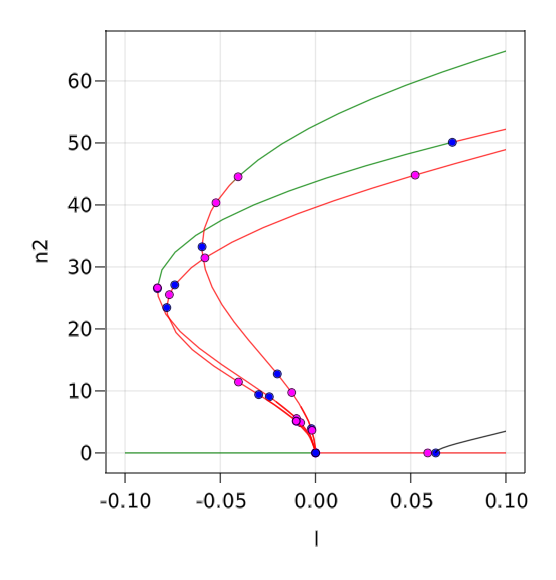
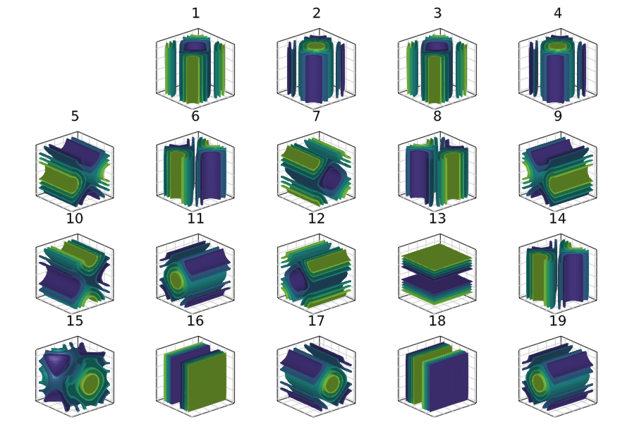

3d Swift-Hohenberg equation, Finite differences
This example is challenging because we cannot employ the easy to use \ sparse linear solver which takes to much time/memory to do the LU decomposition. Hence, one has to be tricky to devise a preconditioned linear solver that does not explode the memory budget. But then, one has to also devise a specific eigensolver. This is done in this tutorial. It also shows how this can be used for automatic branch switching. Hence, if you are not happy with the linear / eigen solvers in BifurcationKit.jl, this is perhaps the example you are looking for.
We look at the following PDE on a 3d domain, e.g. a cube:
with Neumann boundary conditions. We use a Sparse Matrix to express the operator $L_1\equiv(I+\Delta)^2$. However, compared to the 2d case (see Snaking in the 2d Swift-Hohenberg equation), we cannot use directly \ to solve linear systems because the LU décomposition is a bit slow, it uses a lot of memory.
We start by defining the associated functional to encode (E).
using Revise, Parameters, KrylovKit
using GLMakie
using BifurcationKit
using LinearAlgebra, SparseArrays, LinearMaps, DiffEqOperators, Setfield
const BK = BifurcationKit
function Laplacian3D(Nx, Ny, Nz, lx, ly, lz, bc = :Neumann)
speye(n) = sparse(I, n, n)
hx = 2lx/Nx; hy = 2ly/Ny; hz = 2lz/Nz
D2x = CenteredDifference{1}(2, 2, hx, Nx)
D2y = CenteredDifference{1}(2, 2, hy, Ny)
D2z = CenteredDifference{1}(2, 2, hz, Nz)
Qx = Neumann0BC(hx); Qy = Neumann0BC(hy); Qz = Neumann0BC(hz)
_A = kron(speye(Ny), sparse(D2x * Qx)[1]) + kron(sparse(D2y * Qy)[1], speye(Nx))
A = kron(speye(Nz), _A) + kron(kron(sparse(D2z * Qz)[1], speye(Ny)), speye(Nx))
return sparse(A), D2x
end
# main functional
function F_sh(u, p)
@unpack l, ν, L1 = p
return -(L1 * u) .+ (l .* u .+ ν .* u.^2 .- u.^3)
end
# differential of the functional
function dF_sh(u, p, du)
@unpack l, ν, L1 = p
return -(L1 * du) .+ (l .+ 2 .* ν .* u .- 3 .* u.^2) .* du
end
# various differentials
d2F_sh(u, p, dx1, dx2) = (2 .* p.ν .* dx2 .- 6 .* dx2 .* u) .* dx1
d3F_sh(u, p, dx1, dx2, dx3) = (-6 .* dx2 .* dx3) .* dx1
jet = (F_sh, (x, p) -> (dx -> dF_sh(x, p, dx)), d2F_sh, d3F_sh)
# these types are useful to switch to GPU
TY = Float64
AF = Array{TY}Plotting with Makie
In most tutorials, we have used Plots.jl for the figures. However, it appears that Makie.jl is more convenient for 3d plots. We thus define the following convenience functions to display the solutions of (E).
contour3dMakie(x; k...) = AbstractPlotting.contour(x; k...)
contour3dMakie(x::AbstractVector; k...) = contour3dMakie(reshape(x,Nx,Ny,Nz); k...)
contour3dMakie(ax, x; k...) = (AbstractPlotting.contour(ax, x; k...))
contour3dMakie(ax, x::AbstractVector; k...) = contour3dMakie(ax, reshape(x,Nx,Ny,Nz); k...)
contour3dMakie!(ax, x; k...) = (AbstractPlotting.contour!(ax, x; k...))
contour3dMakie!(ax, x::AbstractVector; k...) = contour3dMakie!(ax, reshape(x,Nx,Ny,Nz); k...)Setting up the problem
We provide the parameters defining the PDE:
Nx = Ny = Nz = 22; N = Nx*Ny*Nz
lx = ly = lz = pi
X = -lx .+ 2lx/(Nx) * collect(0:Nx-1)
Y = -ly .+ 2ly/(Ny) * collect(0:Ny-1)
Z = -lz .+ 2lz/(Nz) * collect(0:Nz-1)
# initial guess for newton
sol0 = [(cos(x) .* cos(y )) for x in X, y in Y, z in Z]
sol0 .= sol0 .- minimum(vec(sol0))
sol0 ./= maximum(vec(sol0))
sol0 = sol0 .- 0.0
sol0 .*= 1.7
# parameters for PDE
Δ, D2x = Laplacian3D(Nx, Ny, Nz, lx, ly, lz, :Neumann)
L1 = (I + Δ)^2
par = (l = 0.1, ν = 1.2, L1 = L1)Choice of linear solver
Let us run a quick benchmark to evaluate the direct linear solvers:
julia> @time cholesky(L1) \ sol_hexa;
0.152849 seconds (54 allocations: 87.273 MiB)
julia> @time lu(L1) \ sol_hexa;
0.556157 seconds (87 allocations: 226.210 MiB, 0.49% compilation time)
julia> @time qr(L1) \ sol_hexa;
1.609175 seconds (8.96 k allocations: 989.285 MiB, 2.67% gc time, 0.67% compilation time)Hence, cholesky is the big winner but it requires a positive matrix so let's see how to do that.
As said in the introduction, the LU linear solver does not scale well with dimension $N$. Hence, we do something else. We note that the matrix $L_1$ is hermitian positive and use it as a preconditioner. Thus, we pre-factorize it using a Cholesky decomposition:
Pr = cholesky(L1)
using SuiteSparse
# we need this "hack" to be able to use Pr as a preconditioner.
LinearAlgebra.ldiv!(P::SuiteSparse.CHOLMOD.Factor{Float64}, v) = -(P \ v)
# rtol must be small enough to pass the Fold points and to get precise eigenvalues
# we know that the jacobian is symmetric so we tell the solver
ls = GMRESKrylovKit(verbose = 0, rtol = 1e-9, maxiter = 150, ishermitian = true, Pl = Pr)Let's try this on a Krylov-Newton computation to refine the guess sol0:
optnew = NewtonPar(verbose = true, tol = 1e-8, maxIter = 20, linsolver = ls)
sol_hexa, hist, flag = @time BK.newton(F_sh,
(x, p) -> (dx -> dF_sh(x, p, dx)),
vec(sol0), par, optnew)which gives
Newton Iterations f(x) Linear Iterations
0 2.6003e+02 0
1 1.5414e+02 24
2 2.6040e+02 23
3 7.3531e+01 21
4 2.0512e+01 20
5 6.4608e+00 17
6 1.3743e+00 17
7 1.7448e-01 17
8 4.0925e-03 17
9 2.4078e-06 17
10 1.7275e-10 17
2.054799 seconds (1.35 M allocations: 212.193 MiB, 6.63% gc time, 17.77% compilation time)and contour3dMakie(sol_hexa) produces

Continuation and bifurcation points
We now switch gears and compute the stability of the trivial solution $u=0$. We will then branch from the detected bifurcation points. However, we wish to show an example of computation of eigenvalues based on a custom preconditioned Shift-Invert strategy.
We thus define our eigensolver based on the previously defined pre-conditioned linear solver ls:
# structure to hold eigensolver
struct SH3dEig{Ts, Tσ} <: BK.AbstractEigenSolver
# linear solver used for Shift-Invert strategy
ls::Ts
# shift of the linear operator
σ::Tσ
end
# function to extract eigenvectors, used for automatic branch switching
BifurcationKit.geteigenvector(eigsolve::SH3dEig, vecs, n::Union{Int, Array{Int64,1}}) = vecs[n]
# implementation of Shift-invert strategy
function (sheig::SH3dEig)(J, nev::Int; verbosity = 0, kwargs...)
σ = sheig.σ
nv = 30
Jshift = du -> J(du) .- σ .* du
A = du -> sheig.ls(Jshift, du)[1]
# we adapt the krylov dimension as function of the requested eigenvalue number
vals, vec, info = KrylovKit.eigsolve(A, AF(rand(Nx*Ny*Nz)), nev, :LM;
tol = 1e-12, maxiter = 20, verbosity = verbosity, ishermitian = true,
krylovdim = max(nv, nev + nv))
vals2 = 1 ./vals .+ σ
Ind = sortperm(vals2, by = real, rev = true)
return vals2[Ind], vec[Ind], true, info.numops
endWe can then declare our eigensolver and pass it to the newton parameters
eigSH3d = SH3dEig((@set ls.rtol = 1e-9), 0.1)
@set! optnew.eigsolver = eigSH3dWe are now ready to perform continuation and detection of bifurcation points:
optcont = ContinuationPar(dsmin = 0.0001, dsmax = 0.005, ds= -0.001, pMax = 0.15,
pMin = -.1, newtonOptions = setproperties(optnew; tol = 1e-9, maxIter = 15),
maxSteps = 146, detectBifurcation = 3, nev = 15, nInversion = 4, plotEveryStep = 1)
br, = continuation(
F_sh, (x, p) -> (dx -> dF_sh(x, p, dx)),
zeros(N), par, (@lens _.l), optcont;
plot = true, verbosity = 3,
plotSolution = (ax, x, p) -> contour3dMakie(ax, x),
printSolution = (x, p) -> (n2 = norm(x), n8 = norm(x, 8)),
normC = x -> norm(x, Inf))The following result shows the detected bifurcation points (its takes ~300s)
julia> br
Branch number of points: 34
Branch of Equilibrium
Parameters l from 0.1 to -0.1
Bifurcation points:
(ind_ev = index of the bifurcating eigenvalue e.g. `br.eig[idx].eigenvals[ind_ev]`)
- # 1, bp at l ≈ +0.06243495 ∈ (+0.06243495, +0.06287689), |δp|=4e-04, [converged], δ = (-1, 0), step = 8, eigenelements in eig[ 9], ind_ev = 10
- # 2, nd at l ≈ +0.06069653 ∈ (+0.06069653, +0.06069826), |δp|=2e-06, [converged], δ = (-6, 0), step = 9, eigenelements in eig[ 10], ind_ev = 9
- # 3, nd at l ≈ -0.00007046 ∈ (-0.00007046, +0.00015051), |δp|=2e-04, [converged], δ = (-3, 0), step = 18, eigenelements in eig[ 19], ind_ev = 3We get the following plot during computation:

We don't need to call newton first in order to use continuation.
Automatic branch switching
The following computation takes ~1.5h
We can use Branch switching to compute the different branches emanating from the bifurcation points. For example, the following code will perform automatic branch switching from the last bifurcation point of br. Note that this bifurcation point is 3d.
br1, = @time continuation(jet..., br, 3, setproperties(optcont; saveSolEveryStep = 10,
detectBifurcation = 0, pMax = 0.1, plotEveryStep = 5, dsmax = 0.02);
plot = true, verbosity = 3,
# to set initial point on the branch
δp = 0.01,
# remove display of deflated newton iterations
verbosedeflation = false,
tangentAlgo = BorderedPred(),
# to compute the normal form, so we don't have to
# compute the left eigenvectors
issymmetric = true,
plotSolution = (ax, x, p) -> contour3dMakie(ax, x),
printSolution = (x, p) -> (n2 = norm(x), n8 = norm(x, 8)),
normC = x -> norm(x, Inf))We can then plot the branches using BK.plotBranch(br, branches...) where green (resp. red) means stable (resp. unstable) solution.

There are 19 banches that were discovered. You can plot the solutions on the branches using
fig = Figure(resolution = (1200, 900))
for i=1:length(br1)
ix = div(i,5)+1; iy = i%5+1
@show i, ix, iy
ax = Axis3(fig[ix, iy], title = "$i", aspect = (1, 1, 1))
hidedecorations!(ax, grid=false)
contour3dMakie!(ax, br1[i].sol[2].x)
ax.protrusions = (0, 0, 0, 10)
end
display(fig)